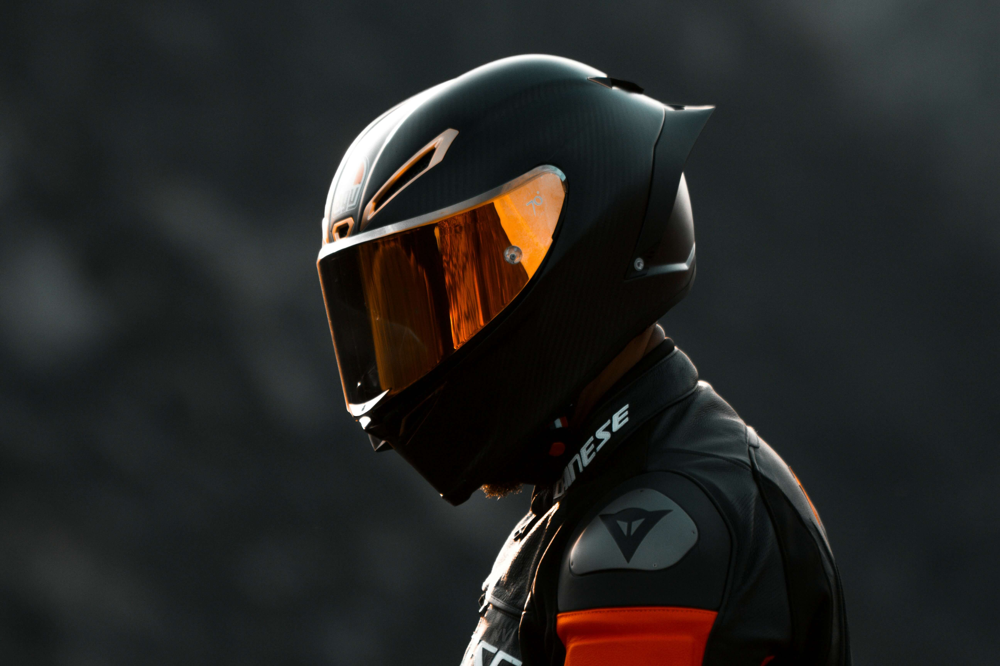
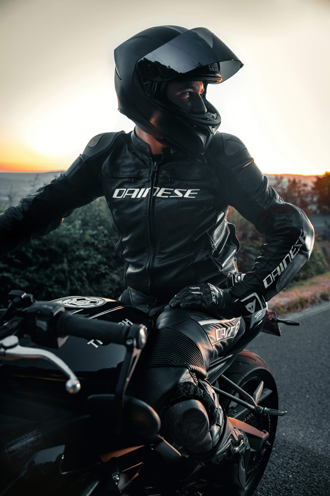
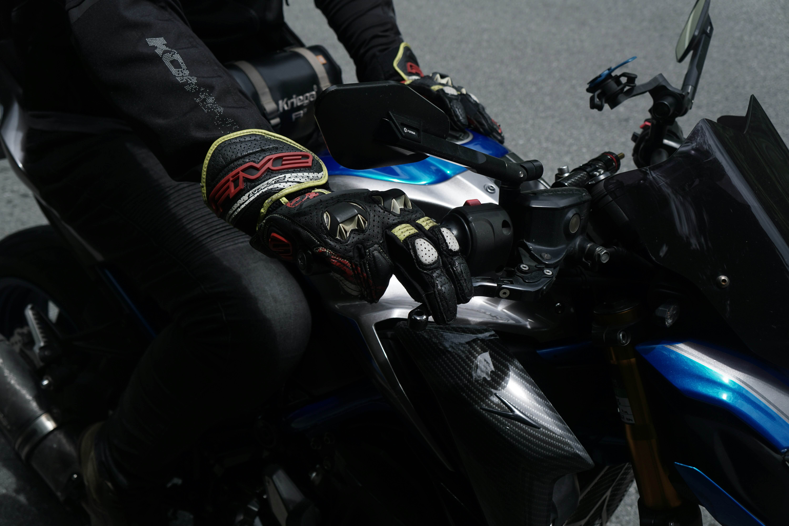

Featured Riding Tips
New riders should focus on smooth throttle control, steady braking, and keeping their eyes up through turns. Building these habits early makes riding safer and more enjoyable.
Ride Smarter. Ride Safer.

This website is designed for beginner and intermediate riders who want practical information about riding safety, motorcycle gear, maintenance, and different types of bikes.
Start with the Beginner Guide
New riders should focus on smooth throttle control, steady braking, and keeping their eyes up through turns. Building these habits early makes riding safer and more enjoyable.

A quality full-face helmet gives the best head and face protection while riding.

Riding jackets provide abrasion resistance and impact protection for everyday riding.

Gloves improve grip, comfort, and protection in changing weather conditions.

Boots protect your ankles and improve stability when stopping or shifting gears.